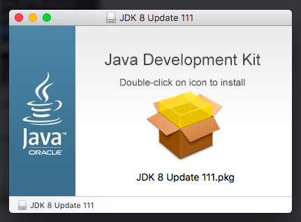

Linux RHEL 7 & CentOS 7
Descargar el último Java
Nota: Si tu CentOS o RHEL es una instalación mínima reciente, tal vez debas instalar la utilería wget usando yum
# yum -y install wget |
Descarga el último Java SE Development Kit 8 desde el sitio oficial de descargas usando los siguientes comandos para descargar desde una shell# cd /opt/
# wget --no-cookies --no-check-certificate --header "Cookie: gpw_e24=http%3A%2F%2Fwww.oracle.com%2F; oraclelicense=accept-securebackup-cookie" "http://download.oracle.com/otn-pub/java/jdk/8u161-b12/2f38c3b165be4555a1fa6e98c45e0808/jdk-8u161-linux-x64.tar.gz"
# tar xzfv jdk-8u161-linux-x64.tar.gz
Nota: Para servidores en producción es altamente recomendable instalar Java Server JRE. El Server JRE incluye herramientas para monitorear la JVM y herramientas comúnmente requeridas para servidores de aplicaciones, pero no incluye la integración con navegadores (el plug-in de Java)
# cd /opt/ |
Configurar Variables de Ambiente
La mayoria de las aplicaciones basadas en Java usan las variables de ambiente para trabajar. CentOS y RHEL proveen del directorio /etc/profile.d/ para personalizar las variables de ambiente por aplicacion:# echo "export JAVA_HOME=/opt/jdk1.8.0_161/" >> /etc/profile.d/java.sh
# echo "export JRE_HOME=/opt/jdk1.8.0_161/jre/" >> /etc/profile.d/java.sh
# echo "export PATH=\$PATH:\$JAVA_HOME/bin/:\$JRE_HOME/bin/" >> /etc/profile.d/java.sh
# source /etc/profile.d/java.sh
Instalar Java con Alternatives
Después de cambiar las Variable de Ambiente, usa Alternatives para instalar Java# alternatives --install /usr/bin/java java $JAVA_HOME/bin/java 1
# alternatives --install /usr/bin/jar jar $JAVA_HOME/bin/jar 1
# alternatives --set java $JAVA_HOME/bin/java
# alternatives --set jar $JAVA_HOME/bin/jar
En este punto Java 8 ha sido instalado satisfactoriamente en tu sistema.
Nota: Si realizaste esta instalación en un Servidor de Desarrollo, te recomentamos también la instalación del comando javac usando alternatives
# alternatives --install /usr/bin/javac javac $JAVA_HOME/bin/javac 1 |
Linux Debian & Ubuntu
Descargar el último Java
Nota: Si tu Ubuntu o Debian es una instalación mínima reciente, tal vez debas instalar la utilería wget usando apt-get
$ sudo apt-get install wget |
Descarga el último Java SE Development Kit 8 desde el sitio oficial de descargas usando los siguientes comandos para descargar desde una shell$ cd /opt/
$ sudo wget --no-cookies --no-check-certificate --header "Cookie: gpw_e24=http%3A%2F%2Fwww.oracle.com%2F; oraclelicense=accept-securebackup-cookie" "http://download.oracle.com/otn-pub/java/jdk/8u161-b12/2f38c3b165be4555a1fa6e98c45e0808/jdk-8u161-linux-x64.tar.gz"
$ sudo tar xzfv jdk-8u161-linux-x64.tar.gz
Nota: Para servidores en producción es altamente recomendable instalar Java Server JRE. El Server JRE incluye herramientas para monitorear la JVM y herramientas comúnmente requeridas para servidores de aplicaciones, pero no incluye la integración con navegadores (el plug-in de Java)
$ cd /opt/ |
Configurando las Variables de Ambiente
La mayoria de las aplicaciones basadas en Java usan las variables de ambiente para trabajar. Ubuntu y Debian proveen del directorio /etc/profile.d/ para personalizar las variables de ambiente por aplicacion:$ sudo echo "export JAVA_HOME=/opt/jdk1.8.0_161/" >> /etc/profile.d/java.sh
$ sudo echo "export JRE_HOME=/opt/jdk1.8.0_161/jre/" >> /etc/profile.d/java.sh
$ sudo echo "export PATH=\$PATH:\$JAVA_HOME/bin/:\$JRE_HOME/bin/" >> /etc/profile.d/java.sh
$ source /etc/profile.d/java.sh
Instala Java con Alternatives
Después de cambiar las Variable de Ambiente, usa Alternatives para instalar Java$ sudo update-alternatives --install /usr/bin/java java $JAVA_HOME/bin/java 1
$ sudo update-alternatives --install /usr/bin/jar jar $JAVA_HOME/bin/jar 1
$ sudo update-alternatives --set java $JAVA_HOME/bin/java
$ sudo update-alternatives --set jar $JAVA_HOME/bin/jar
En este punto Java 8 ha sido instalado satisfactoriamente en tu sistema.
Nota: Si realizaste esta instalación en un Servidor de Desarrollo, te recomentamos también la instalación del comando javac usando alternatives
$ sudo update-alternatives --install /usr/bin/javac javac $JAVA_HOME/bin/javac 1 |
MacOS X
Descargar el último Java
Note: Si tu MacOS es una instalación reciente, tal vez debas instalar la utilería wget
Primeramente, inicia Terminal (se encuentra en Aplicaciones/Utilidades). Descarga el último Java SE Development Kit 8 desde el sitio oficial de descargas usando los siguientes comandos:$ cd ~/Downloads/
$ wget --no-cookies --no-check-certificate --header "Cookie: gpw_e24=http%3A%2F%2Fwww.oracle.com%2F; oraclelicense=accept-securebackup-cookie" "http://download.oracle.com/otn-pub/java/jdk/8u161-b12/2f38c3b165be4555a1fa6e98c45e0808/jdk-8u161-macosx-x64.dmg"
Abre el archivo descargado usando:$ open jdk-8u161-macosx-x64.dmg
Este comando lanza una ventana que contiene un archivo *pkg. Haz doble click y sigue las instrucciones
